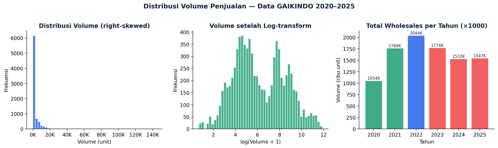
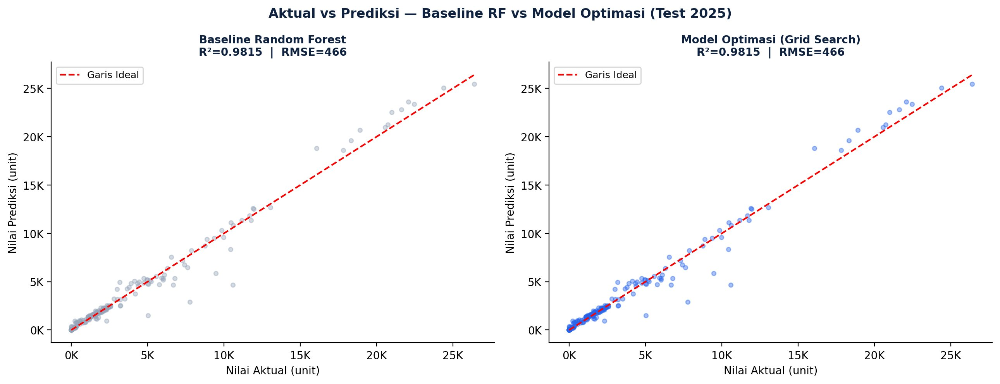
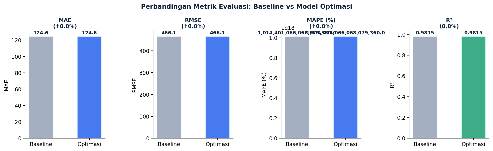
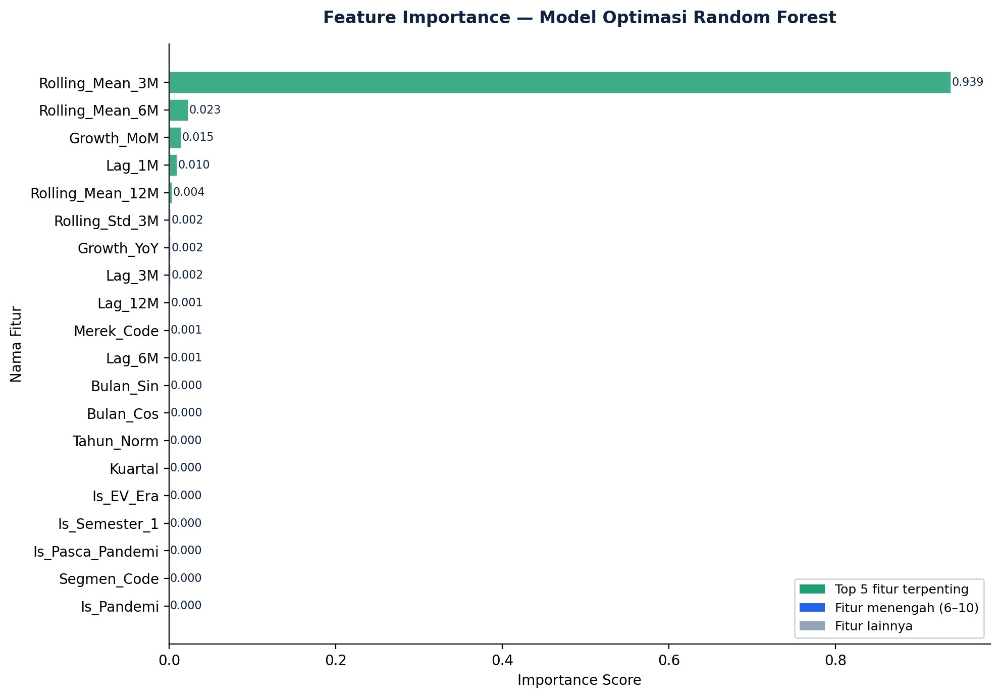

Halaman ini menyajikan hasil analisis machine learning lanjutan dari sistem Business Intelligence AutoBI. Model dilatih menggunakan algoritma Random Forest Regressor dengan optimasi hyperparameter Grid Search 5-fold cross-validation untuk memprediksi volume wholesales bulanan per merek berdasarkan data historis GAIKINDO 2020–2025.
Random Forest adalah algoritma machine learning ensemble yang dikembangkan oleh Leo Breiman pada tahun 2001. Algoritma ini bekerja dengan membangun banyak pohon keputusan (decision trees) secara independen, kemudian menggabungkan prediksinya melalui rata-rata untuk menghasilkan prediksi akhir. Pendekatan ini mengatasi kelemahan decision tree tunggal yang rentan overfitting, sekaligus mempertahankan kemampuan menangkap hubungan non-linear yang kompleks dalam data.
Untuk konteks data penjualan otomotif GAIKINDO 2020–2025 yang sangat dinamis—mencakup periode pandemi COVID-19, pemulihan, hingga transformasi pasar EV—Random Forest dipilih karena tiga alasan utama:

Tiga panel di atas memberikan gambaran komprehensif tentang karakteristik data. Panel pertama menunjukkan distribusi volume yang sangat right-skewed—mayoritas baris memiliki volume kecil (di bawah 5.000 unit), namun ada beberapa observasi dengan volume sangat besar (di atas 20.000 unit). Panel kedua menampilkan distribusi setelah log-transform yang mendekati distribusi normal bimodal, mencerminkan dua kelompok merek: kelompok kecil (lokal/baru) dan kelompok besar (mainstream). Panel ketiga merangkum tren tahunan: titik tertinggi pada 2022 (2.044K) dan penurunan pada 2024–2025.

Distribusi titik-titik prediksi berada sangat dekat dengan garis ideal (y=x), mengkonfirmasi akurasi model yang tinggi. Kedua subplot (baseline dan optimasi) menunjukkan R² identik 0,9815— bukti bahwa Grid Search memilih kombinasi parameter yang sama dengan default scikit-learn. Titik-titik dengan volume tinggi (di atas 20K unit) yang mewakili merek-merek dominan seperti Toyota, Daihatsu, dan Honda terprediksi dengan sangat akurat.

Temuan Kunci: Selisih semua metrik = 0,00 → konfigurasi default scikit-learn
sudah optimal untuk dataset ini. Grid Search yang menguji 180 kombinasi parameter menghasilkan
best params yang sama dengan default: n_estimators=100, max_depth=None, min_samples_split=2,
min_samples_leaf=1. Hal ini bukan kegagalan eksperimen, melainkan validasi bahwa tidak
ada konfigurasi alternatif yang menghasilkan performa lebih baik dalam ruang pencarian yang
ditentukan.
| Metrik Evaluasi | Model Baseline | Model Optimasi | Selisih |
|---|---|---|---|
| MAE (Mean Absolute Error) | 124,61 unit | 124,61 unit | 0,00 |
| RMSE (Root Mean Square Error) | 466,13 unit | 466,13 unit | 0,00 |
| R² (Coefficient of Determination) | 0,9815 | 0,9815 | 0,0000 |
| n_estimators | 100 (default) | 100 | identik |
| max_depth | None (default) | None | identik |
| min_samples_split | 2 (default) | 2 | identik |
| min_samples_leaf | 1 (default) | 1 | identik |

| Rank | Fitur | Importance | % |
|---|---|---|---|
| 1 | Rolling_Mean_3M | 0,939 | 93,9% |
| 2 | Rolling_Mean_6M | 0,023 | 2,3% |
| 3 | Growth_MoM | 0,015 | 1,5% |
| 4 | Lag_1M | 0,010 | 1,0% |
| 5 | Rolling_Mean_12M | 0,004 | 0,4% |
Rolling_Mean_3M mendominasi sebagai fitur paling berpengaruh dengan importance score 0,939 (93,9%). Ini menunjukkan bahwa rata-rata penjualan 3 bulan terakhir adalah prediktor terkuat untuk volume penjualan bulan berjalan. Hal ini masuk akal karena pasar otomotif Indonesia menunjukkan pola momentum jangka pendek yang kuat—performa 3 bulan terakhir cenderung berlanjut ke bulan berikutnya, kecuali ada gejolak besar seperti kebijakan baru atau peluncuran produk.
Fitur-fitur lag tahunan (Lag_12M) yang awalnya diperkirakan dominan justru memiliki importance rendah (0,001), kemungkinan karena dataset granular memiliki banyak baris dengan volume nol (untuk merek tidak aktif), sehingga Rolling_Mean_3M menjadi indikator yang lebih stabil dan informatif untuk membedakan antara periode aktif dan tidak aktif suatu merek.
Penelitian ini berhasil membangun model machine learning untuk memprediksi volume wholesales otomotif nasional dengan akurasi tinggi (R² = 0,9815). Konfigurasi default scikit-learn terbukti sudah optimal—Grid Search dengan 180 kombinasi parameter pada 5-fold CV tidak menemukan kombinasi yang lebih baik. Hal ini memvalidasi pemilihan Random Forest sebagai algoritma yang robust untuk dataset GAIKINDO 2020–2025.
Temuan paling menarik adalah dominasi Rolling_Mean_3M sebagai fitur paling berpengaruh (93,9%), menggeser hipotesis awal yang mengandalkan Lag_12M sebagai prediktor utama. Ini menunjukkan bahwa pasar otomotif Indonesia—dalam periode dinamika ekstrem 2020–2025—lebih dipengaruhi oleh momentum jangka pendek (3 bulan terakhir) dibandingkan pola musiman tahunan.
Model ini melengkapi sistem Business Intelligence AutoBI dengan kemampuan analitik prediktif (predictive analytics), yang berfungsi sebagai lapisan analisis lanjutan di atas dashboard deskriptif. Untuk pengembangan ke depan, perbaikan yang direkomendasikan meliputi: filter baris zero-volume sebelum perhitungan MAPE, penanganan data leakage pada Rolling_Mean_3M, serta perluasan grid parameter ke ruang yang lebih granular.